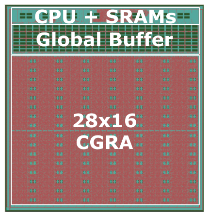
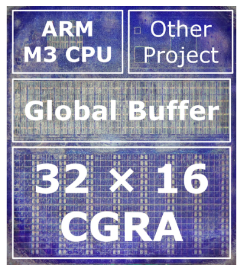
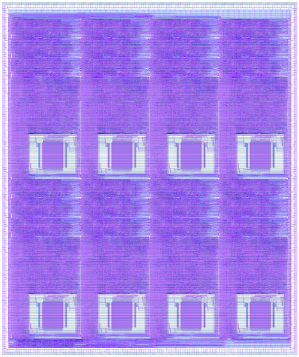

2021—Present
Stanford University
Ph.D. studies, Electrical Engineering
Advised by Professor Priyanka Raina
Electrical Engineering
Stanford University
Hardware systems researcher
Ph.D. student in Electrical Engineering at Stanford University, working on programmable accelerators and efficient computing systems.
I am an Electrical Engineering Ph.D. student at Stanford University, advised by Professor Priyanka Raina. My research focuses on the architecture of coarse-grained reconfigurable arrays (CGRAs) and on building high-performance, energy-efficient computing platforms.
Before Stanford, I worked as a digital circuit designer at MediaTek, developing hardware architectures for image-processing pipelines. My earlier work also explored computational photography, including realistic digital refocusing for multi-camera mobile devices.
2021—Present
Ph.D. studies, Electrical Engineering
Advised by Professor Priyanka Raina
2018
M.S., Electrical Engineering
Hsinchu, Taiwan
2016
B.S., Electrical Engineering and Computer Science
Hsinchu, Taiwan
2021—Present
Stanford University
Researching programmable accelerator architectures, CGRAs, and high-performance, energy-efficient computing systems in the Stanford AHA group.
Before Stanford
MediaTek
Developed hardware architectures for image-processing pipelines and worked on computational-photography systems.
Selected silicon projects I have contributed to, spanning open-source and advanced process technologies.

Dec. 2023
Intel 16 nm · 28 × 16 CGRA
A CGRA SoC designed to accelerate full sparse machine-learning applications, with support for high-throughput sparse primitives and Gustavson-style dataflow.

2022
GlobalFoundries 12 nm · 32 × 16 CGRA
A programmable accelerator for dense and sparse workloads, adding higher compute density, energy-efficient memories, and native sparse tensor-algebra support.

June 2021
SkyWater 130 nm · 4 × 8 CGRA
An open-source CGRA for machine-learning and image-processing applications written in Halide. The taped-out design runs at 66 MHz and occupies 3.5 × 2.9 mm.
Selected journal and conference publications. See Google Scholar for citation data.
2025
IEEE Solid-State Circuits Letters, vol. 8, pp. 293–296, 2025
2025
IEEE Journal of Solid-State Circuits, 2025
2025
IEEE Micro, vol. 45, no. 3, pp. 58–65, 2025
2023
IEEE Journal of Solid-State Circuits, 2023
2023
ACM Transactions on Embedded Computing Systems, vol. 22, no. 2, 2023
2023
IEEE Open Journal of the Solid-State Circuits Society, vol. 3, pp. 52–62, 2023
2023
IEEE International Symposium on Circuits and Systems (ISCAS), 2023
2022
Proceedings of the 59th ACM/IEEE Design Automation Conference (DAC), pp. 1339–1342, 2022
2021
IEEE Transactions on Electron Devices, vol. 68, no. 12, pp. 6637–6643, 2021